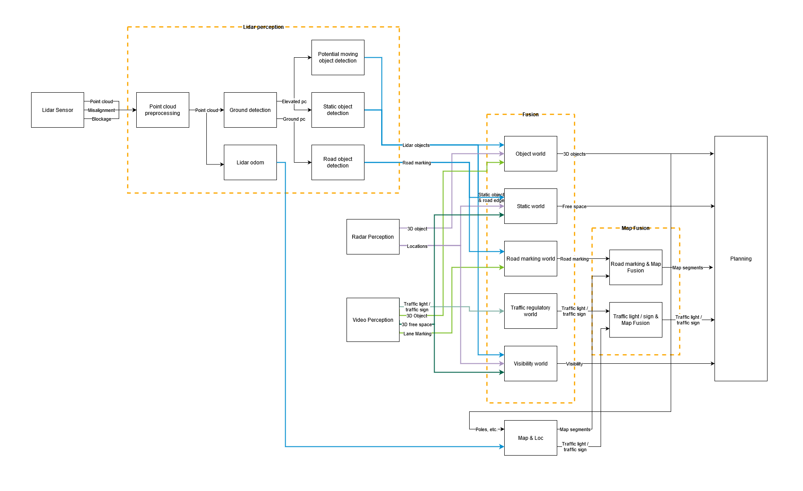

Lidar and fusion architecture

Lidar Perception:
point cloud preprocessing will use the ego motion data from vehicle to do the ego motion compensation, and output point cloud w.r.t. same timestamp within one frame.
Ground detection will detect the ground planer and separate the compensated point cloud into ground point cloud (points belong to ground planer) and elevated point cloud (points belong to objects).
Fusion:
Fusion computation resource would be 40 kDMIPs for CPU according to DE expert evaluation (Computation power evaluation and optimization due to scope change of wave 3)
Effort estimation of 450MM could meet minimum requirement.